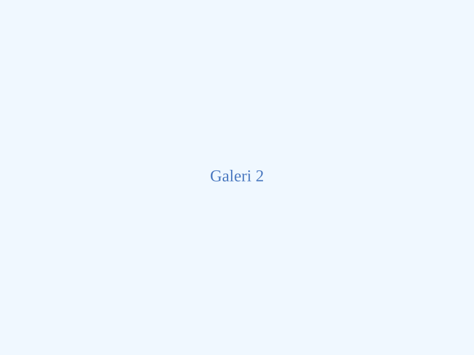
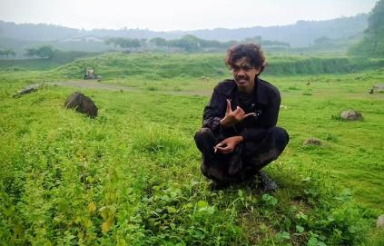

Panel Admin
Gunakan panel ini untuk mengubah teks, gambar, dan video. Setelah selesai, klik tombol Simpan Perubahan.
Alih-alih membiarkan sisa makanan menumpuk di tempat pembuangan, kami mengajak seluruh masyarakat untuk mengolahnya secara mandiri.
Langkah kecil ini tidak hanya mengurangi volume sampah, tetapi juga menciptakan lingkungan desa yang lebih bersih, sehat, dan berkelanjutan.
Produk ini mudah dibuat, aman, dan dapat disimpan lama bila disimpan dalam wadah tertutup rapat.

✨ Manfaat Serbaguna untuk Sehari-hari
Ekoenzim dapat digunakan untuk membersihkan dan merawat lantai, menjaga kebersihan saluran air, mengurangi bau tidak sedap, serta menjadi alternatif pembersih harian yang bebas bahan kimia berbahaya.
Gula Merah / Molase
Berperan sebagai sumber makanan mikroba dalam fermentasi.
Sisa Sayur & Kulit Buah
Bahan organik yang difermentasi untuk menghasilkan enzim.
Air Bersih
Pelarut alami yang memfasilitasi proses fermentasi.
Rasio umum pembuatan: 1 : 3 : 10 (molase : bahan organik : air)
Satu Cairan, Beragam Solusi Rumah Tangga
Dengan mengganti produk berbahan kimia ke Ekoenzim, Anda turut menjaga kesehatan keluarga sekaligus merawat bumi. Berikut adalah cara praktis mengaplikasikannya di rumah:

-
✨Mengepel dan Merawat Lantai: Jadikan ekoenzim sebagai andalan cairan pembersih harian untuk membersihkan dan merawat lantai rumah Anda agar bersih kesat secara alami.
-
🚽Pembersihan WC dan Saluran Air: Tuangkan cairan "ajaib" ini secara berkala untuk menjaga kebersihan saluran air serta mencegah kotoran menempel.
-
🌬️Penghilang Bau Tidak Sedap: Semprotkan atau tuangkan ekoenzim untuk mengurangi bau tidak sedap di sudut-sudut ruangan, area tempat sampah, atau kamar mandi.
-
🌱Penyubur Tanaman: Encerkan dengan air dan gunakan sebagai pupuk organik cair yang sangat baik untuk menyuburkan tanaman di pekarangan Anda.
-
🐛Pengusir Hama Alami: Aplikasikan cairan ini di area yang rentan, karena selain menyuburkan tanaman, ekoenzim juga ampuh sebagai pengusir hama yang aman dan ramah lingkungan.
Tiga Langkah Mudah dalam Semangat Gotong Royong
Membuat Ekoenzim adalah aktivitas yang menyenangkan, apalagi jika dikerjakan bersama-sama. Berikut adalah tahapan mudah yang kami lakukan di Dusun Demangan:
Kumpulkan sisa dapur
Sayur, kulit buah, dan sisa organik dipilah untuk dijadikan bahan utama.
Campur dan fermentasi
Proses sederhana dilakukan secara bersama-sama agar hasilnya konsisten dan aman.
Bagikan untuk warga
Produk siap dipakai di rumah, ditanam di pekarangan, atau dibagikan ke tetangga.
Proses gotong royong warga Demangan
Melihat langsung proses pemotongan, pencampuran, hingga pengemasan membuat semangat kebersamaan semakin terasa.


Klik foto untuk mengganti dengan foto dokumentasi Anda.
Program Pembagian GRATIS untuk Warga!
Produk ini siap dibagikan khusus untuk masyarakat dan ibu-ibu PKK Dusun Demangan.